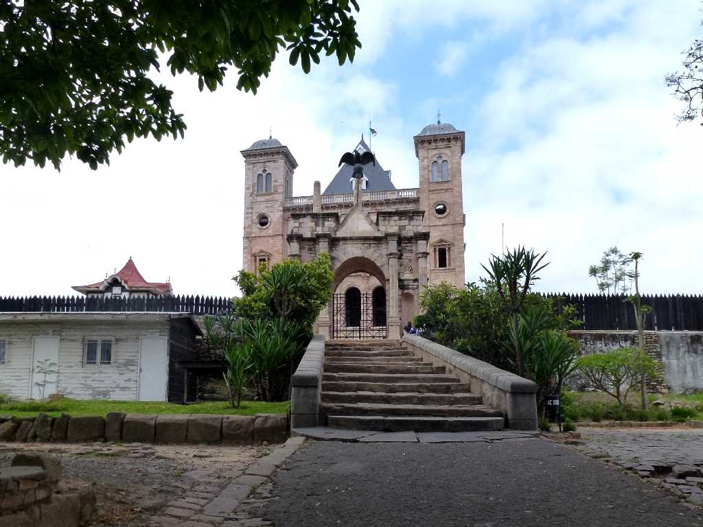
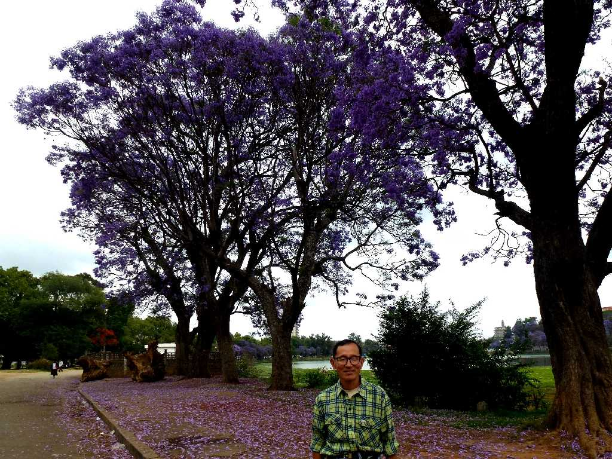

View Lac Anosy from Rova Antananarivo
アンタナナリボは１６２５年メリナ族の村であったが１８世紀初頭にかけて街として栄えた メリナ王国がマダガスカルを統一したのち１７９４年に首都とした 女王宮の丘からアンタナナリボの市街地を望む

Rova Queen's Palace
１８３５年に創建されたフィレンツェ様式の女王宮

October 28 2013 Lac Anosy Antananarivo
マダガスカルの桜ジャカランダが満開のアヌシ湖